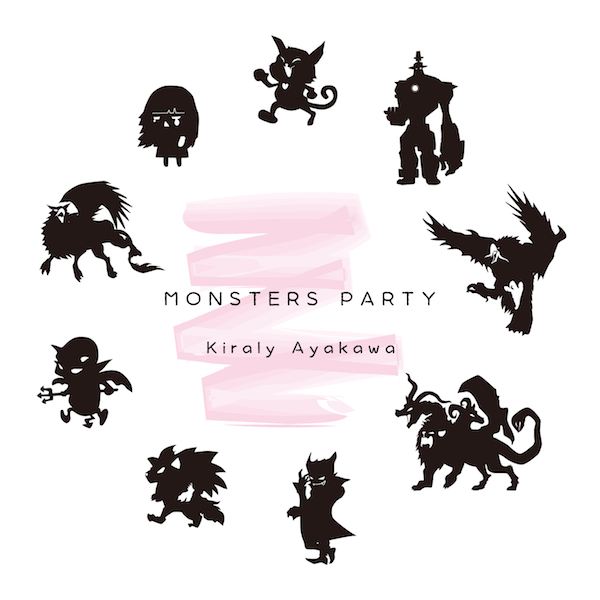

▼タイトル
MONSTERS PARTY (モンスターズ パーティ)
▼ジャケットイラスト
夜市
▼紹介文
ファンタジーＲＰＧに出て来そうな「モンスター」達をテーマにダークファンタジー寄りのイメージで作られた楽曲をまとめた作品集です。
※楽曲作品として楽しんでもらうのはもちろんのこと、ゲームや動画などにBGM素材としてご利用いただけます
▼Track List
※【】内は各楽曲のテーマモンスターです。
1.幸せを運ぶ猫
【ケット・シー】
「楽しいことだけ考えてればきっと幸せになれるさ♪」
ちょっとマヌケでどこか憎み切れない悪役のテーマとしての使用を想定した楽曲です。無邪気で能天気なフリして実は腹黒いケット・シーの姿をイメージしています。
2.少女の霊は哀しき夢を見る
【バンシー】
「ここはどこなの……？ お母さん…… 淋しいよ……」
仲間の死などの悲壮感溢れるイベントでの使用を想定した楽曲です。死の意識も無いままに彷徨い続けるバンシーの姿をイメージしています。
3.使い魔は嗤う
【インプ】
「悪戯してたら時間なんてアッと言う間に過ぎちゃうんだ！」
洞窟や地下道などの序盤のダンジョンでの使用を想定した楽曲です。遊びでは済まされないような過激すぎるイタズラを楽しむインプ達の姿をイメージしています。
4.その血と涙に乾杯
【ヴァンパイア】
「永遠とも思えるこの時間を彼女なしで過ごせと言うのか……」
古城などのフィールドでの使用を想定した楽曲です。永遠を生きる者の哀しい宿命を背負うヴァンパイアの姿をイメージしています。
5.狼男と月の夜
【ウェアウルフ】
「満月の夜は疼くんだ！ 今夜は最高にハイになれそうだぜッ！！」
敵勢の拠点などのダンジョンでの使用を想定した楽曲です。狂気に身を委ね踊り明かすウェアウルフの姿をイメージしています。
6.砂塵舞う空翔る翼
【グリフォン】
「そう！ 飛ぶって言うよりは駆けるって感覚の方が近いんだよ！」
砂漠などのフィールドでの使用を想定した楽曲です。低空を凄まじいスピードで跳び回るグリフォンの姿をイメージしています。
7.秘宝の守護者
【ゴーレム】
「渡せない……この宝を守ることだけが私の存在証明なのだから」
イベント戦などの中ボス戦での使用を想定した楽曲です。圧倒的なパワーで行く手に立ち塞がる巨大なゴーレムの姿をイメージしています。
8.混濁する意識と破壊衝動
【キマイラ】
「オレは…… オレはダレだ…… 何故オレは生きている……！？」
危機的状況のイベントシーンなどでの使用を想定した楽曲です。合成獣としての行き場の無い怒りに憤慨しているキマイラの姿をイメージしています。
9.大空の覇者
【ルフ】
「人間どもよッ！ 畏れ崇めよッ！ 我こそがこの空の王者だッ！！」
ラストダンジョンやボス戦での使用を想定した楽曲です。人間の何倍ものサイズを誇る巨鳥ルフの大空を羽ばたく姿をイメージしています。
準備中